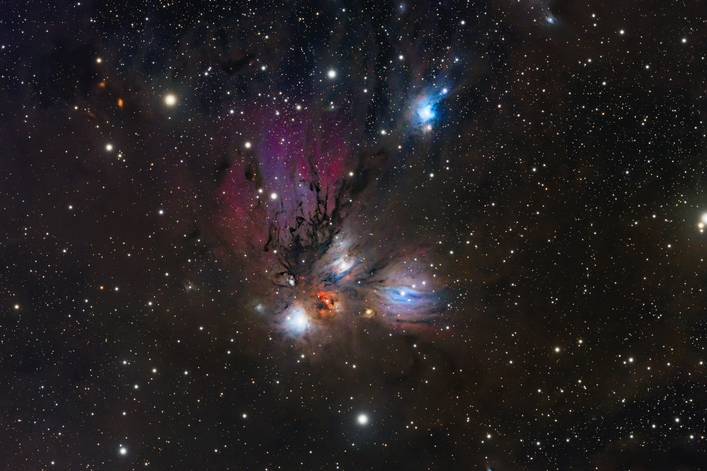
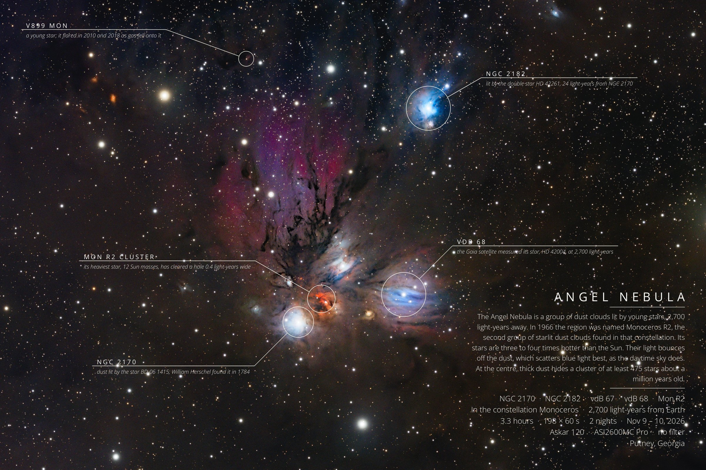

The Angel Nebula is a group of dust clouds lit by young stars, 2,700 light-years away. In 1966 the region was named Monoceros R2, the second group of starlit dust clouds found in that constellation. Its stars are three to four times hotter than the Sun. Their light bounces off the dust, which scatters blue light best, as the daytime sky does. At the centre, thick dust hides a cluster of at least 475 stars about a million years old.